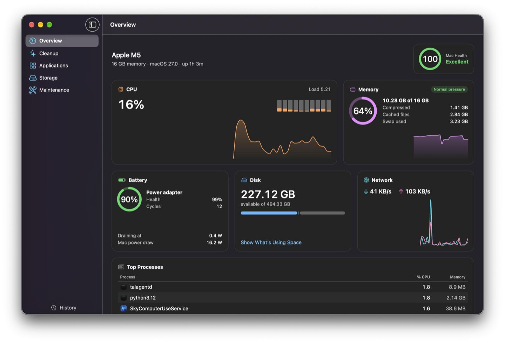
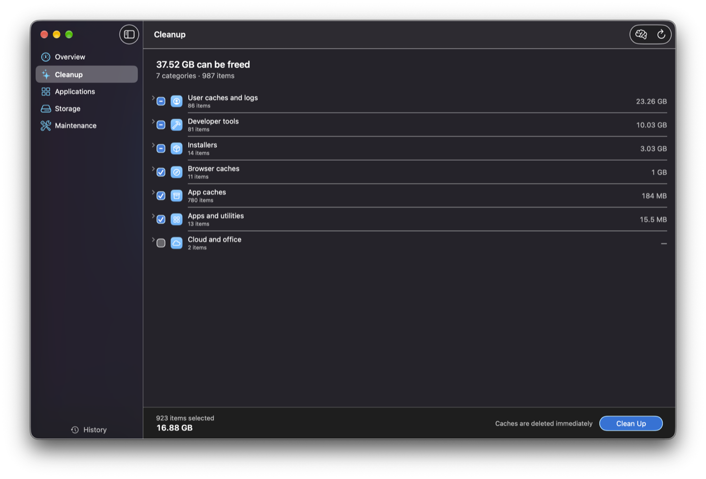
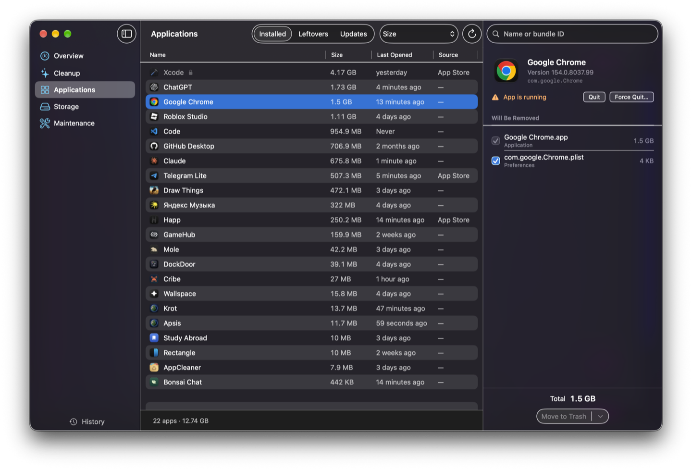
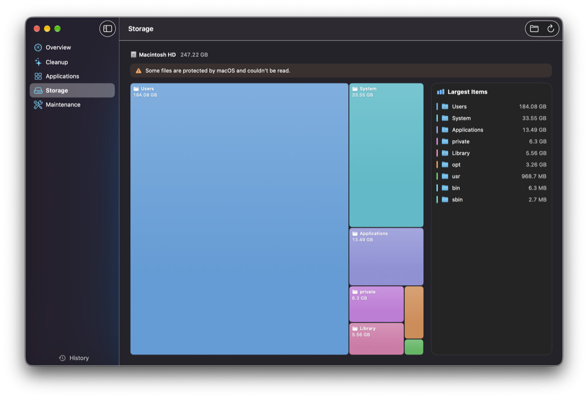
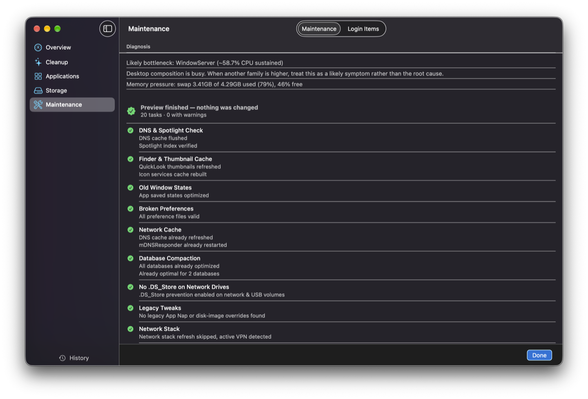

Overview
CPU per core, memory pressure and swap, battery health and cycles, power draw, disk, network, top processes and an overall Mac health score.
Version 1.0.0 · free and open source
A free, open-source system monitor and cleaner for macOS. Native, private, and careful about what it deletes.

Launch film
Six tools, one app
Each section of Apsis has its own planet. Together they cover monitoring, cleanup and upkeep without a subscription.
CPU per core, memory pressure and swap, battery health and cycles, power draw, disk, network, top processes and an overall Mac health score.
Caches, logs, browser and developer junk, old installers and build artifacts. You review every category before anything is removed.
Uninstall apps together with their files in Library, find data left behind by apps you already removed, and check Homebrew, Sparkle and App Store updates.
A treemap of any folder or the whole disk. Drill into folders, reveal them in Finder or move them to the Trash.
Safe macOS maintenance tasks — Finder and Spotlight caches, network cache, damaged preferences — and a list of everything that launches at login.
CPU and memory at a glance, with a mini dashboard. An optional indicator shows when the camera or microphone is in use.
A regular SwiftUI app that follows the system: light and dark mode, your accent color, Reduce Motion, and English or Russian depending on your language settings.
Cleanup
Every scan ends in a list grouped by category — user caches and logs, developer tools, installers, browser and app caches. Expand any group, untick what you want to keep, then clean up.

Applications
Pick an app and Apsis shows the files it keeps in Library before moving anything to the Trash. Switch to Leftovers for data from apps you already deleted, or Updates for Homebrew, Sparkle and App Store versions.

Storage
A treemap of the whole disk or any folder, with a list of the largest items next to it. Drill down, reveal in Finder, or move a folder to the Trash.

Maintenance
Run Mole’s safe maintenance tasks — DNS and Spotlight checks, Finder and thumbnail caches, broken preferences — and review everything that launches at login. A preview run shows the result without changing anything.

Safety first
~/Library/Logs/Apsis/operations.log and shown in History.No accounts, no analytics, no telemetry. Apsis only goes online when you ask it to: to check for app updates or for a new version of Apsis on GitHub.
Open source & free
Apsis is MIT-licensed and developed in the open on GitHub. There is no paid tier, no trial and no upsell — the download is the whole app. Since it touches your files, you can check exactly what it does before you trust it.
Cleanup and maintenance rules come from Mole by tw93. Apsis runs the Mole command-line tool when it’s installed and doesn’t include any of its code. New translations are welcome.
# needs Xcode 26+ and XcodeGen
$ brew install xcodegen
$ git clone https://github.com/nnksem/apsis.git
$ cd apsis
$ make run # Release build into ~/Applications
$ make test # run the engine testsGet started
Get Apsis-<version>.dmg from the latest release and drag Apsis to Applications.
Apsis isn’t notarized, so open it once, then click Open Anyway in System Settings → Privacy & Security.
Recommended, so scans can see all of Library. Optionally brew install mole for the full rule set.
FAQ
Yes. Apsis is free and open source under the MIT license. There are no paid features, subscriptions or ads.
Notarization by Apple requires a paid developer account, so Apsis is signed ad hoc. Open it once, then go to System Settings → Privacy & Security and click Open Anyway. Or run xattr -dr com.apple.quarantine /Applications/Apsis.app.
Apsis requires macOS 26 Tahoe or later. It’s tested on macOS 27 with Apple silicon. The download is a universal app, but Intel Macs are untested.
Without it, macOS hides parts of Library from scans. Because Apsis is signed ad hoc, macOS treats each update as a new app — after updating, switch Full Disk Access for Apsis off and on again.
Mole is an open-source command-line cleaner by tw93. It’s optional: without it, Cleanup uses Apsis’s built-in rules and Maintenance is unavailable. With brew install mole you get the full set of cleanup and maintenance rules.
It’s built to avoid that: you review every list, protected locations are always off limits, apps go to the Trash by default, and Preview mode never deletes anything. Still, it’s software that deletes files — keep backups and read the list before you click Clean Up.
No. There are no accounts, analytics or telemetry. It only goes online when you check for updates.
Turn off Open at login in Settings, quit Apsis from the menu bar and move it to the Trash. Then remove ~/Library/Application Support/Apsis, ~/Library/Logs/Apsis, ~/Library/Caches/io.github.nnksem.apsis and ~/Library/Preferences/io.github.nnksem.apsis.plist.
An apsis is the point of an orbit nearest to or farthest from the body it circles. Each section of the app has its own planet: the Sun for Overview, Earth for Cleanup, Mars for Applications, Jupiter for Storage and Mercury for Maintenance.
Free, open source, and careful with your files.